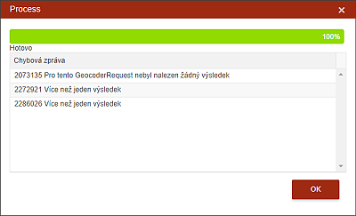

Hromadná kontrola GPS souřadnic
Hromadná kontrola GPS souřadnic se spustí pomocí ikonky vpravo nahoře nad seznamem u Nových spisů v liště s volbou zobrazení spisů v seznamu. Tato funkce automaticky zpracuje všechny nevalidované hlavní (červené) adresy, nekontroluje již adresy, které jsou označeny jako validní. Například z důvodu pomalého připojení může tato funkce skončit, aniž by prošla a ověřila všechny adresy. Při opakovaném spuštění bude procedura pokračovat pouze u adres ještě nevalidovaných.

Kliknutím na ikonu spustí uživatel proces, který překontroluje technickou správnost všech adres (tedy jejich nalezení na mapě) a zapíše k nim GPS souřadnice. Uživatel tuto kontrolu pouští před tím, než spisy přijme. Kontrola probíhá pouze nad Hlavními adresami, ostatní adresy jsou kontrolovány ručně až v průběhu práce s konkrétním spisem, kdy je třeba vybrat pro OSN jinou adresu.
V případě, že se u adresy vyskytne chyba či má adresa duplicitní GPS souřadnice, bude tento spis označen červeným návěstím a dokud jej uživatel ručně neopraví, není možné spis přijmout.
Při spuštění funkce Hromadná kontrola GPS souřadnic se otevře dialog, ve kterém probíhá vizuální kontrola, na kolik % je proces zpracován a zároveň jsou vypsány vzniklé chyby. Výpis každé takové chyby je vždy spojen s číslem spisu (ACC) a s českým či cizojazyčným popisem. V sekci Seznam chybových zpráv jsou uvedeny i řešení takovéto chyby.
